Supprimer un badge
Pour supprimer un badge,
-
dans la liste Badges, cliquez sur le bouton
 correspondant au badge à supprimer ;
correspondant au badge à supprimer ; -
dans le menu affiché, sélectionnez Supprimer ce badge :
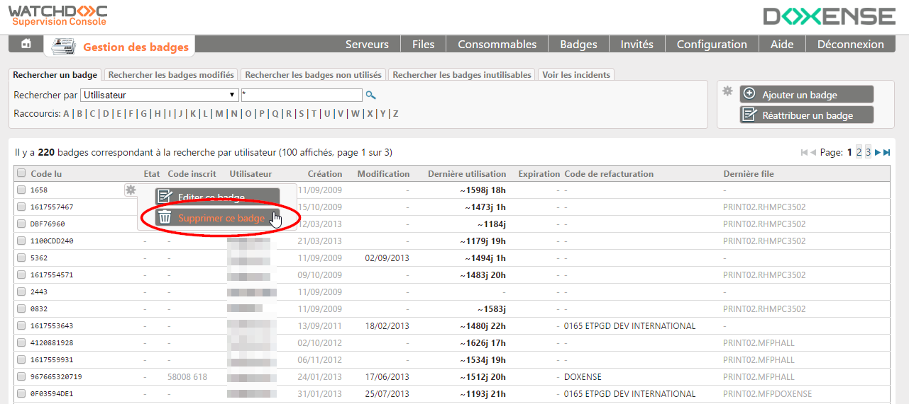
-
dans la boite Suppression d'un badge, confirmez votre action.
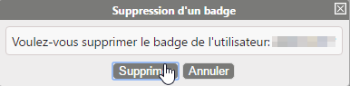
Supprimer plusieurs badges
Pour supprimer plusieurs badges simultanément :
-
dans la liste des badges, cochez les cases pour sélectionner les badges à supprimer ;
-
cliquez sur le bouton Supprimer la sélection situé en base de la liste ;
-
dans la boîte Suppression de badges, validez votre demande de suppression.
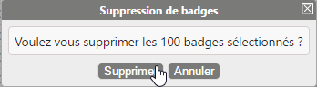
Supprimer des badges en masse
La Console de Supervision dispose d'un outil permettant de supprimer des badges en masse à partir d'une liste de badges extraits d'une base de données tierce.
Pour supprimer une liste de badges dans la Console de supervision, il convient donc d'avoir, au préalable, extrait les badges dans un fichier CSV.
Pour importer la liste de badges à supprimer depuis le fichier CSV :
-
depuis l'interface Gestion des badges, cliquez sur le bouton
-
depuis la fenêtre Suppression de masse depuis fichier CSV, cliquez sur le bouton
 pour rechercher le fichier d'import dans votre espace de travail ;
pour rechercher le fichier d'import dans votre espace de travail ; -
sélectionnez le fichier .csv à importer ;
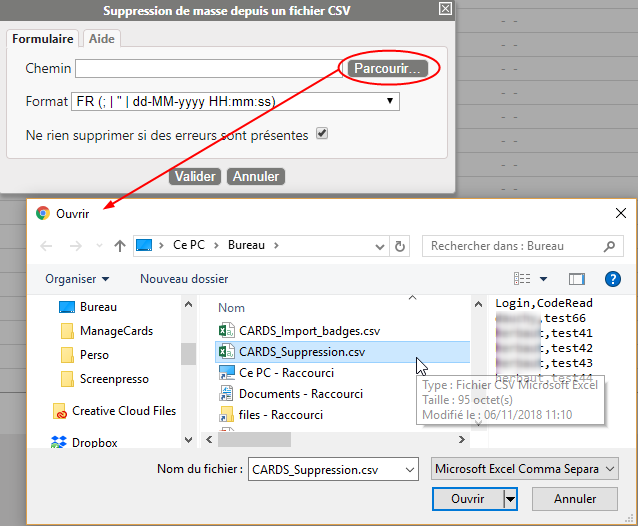
-
sélectionnez le format du fichier .csv ;
-
case "Ne rien importer si des erreurs sont présentes" :
-
cochez-la pour ne supprimer les badges qu'à la condition qu'il n'existe aucune erreur dans le fichier d'import ;
-
décochez la case pour procéder à la suppression, même en cas d'erreur dans le fichier d'import.
-
-
cliquez sur
 pour procéder à la suppression des badges.
pour procéder à la suppression des badges.
→ Au terme de l'opération, un message d'information est affiché, soit pour vous informer de son succès, soit pour vous signaler les erreurs survenues.
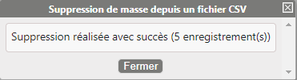
→ Le message d'erreur est générique si vous avez coché la case "Ne pas importer..." ou précise la (les) ligne(s) erronée(s) si vous avez décoché la case :
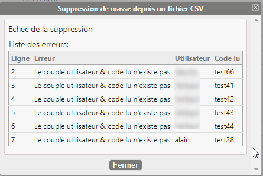
Supprimer des badges inutilisés
Pour supprimer des badges inutilisés :
-
depuis l'interface Gestion des badges, cliquez sur l'onglet Rechercher les badges non utilisés ;
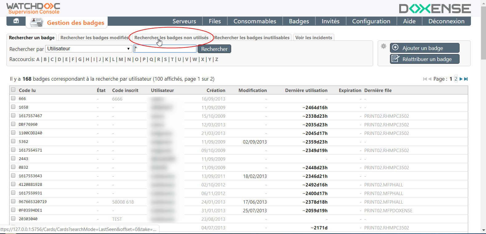
-
dans l'interface de recherche des badges non-utilisés, saisissez une date ou sélectionnez la date dans le calendrier affiché sous le champ ;
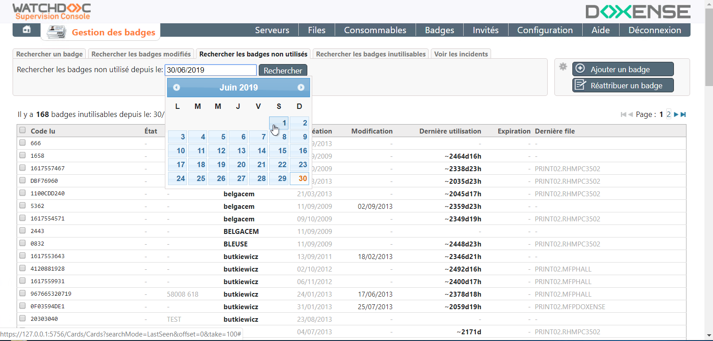
-
après avoir indiqué la date de début de recherche, cliquez sur le bouton ;
-
le résultat de recherche s'affiche dans la liste ;
-
dans la liste, sélectionnez le badge à supprimer, puis cliquez sur le bouton
pour accéder au menu contextuel ; -
dans le menu contextuel, cliquez sur le bouton :
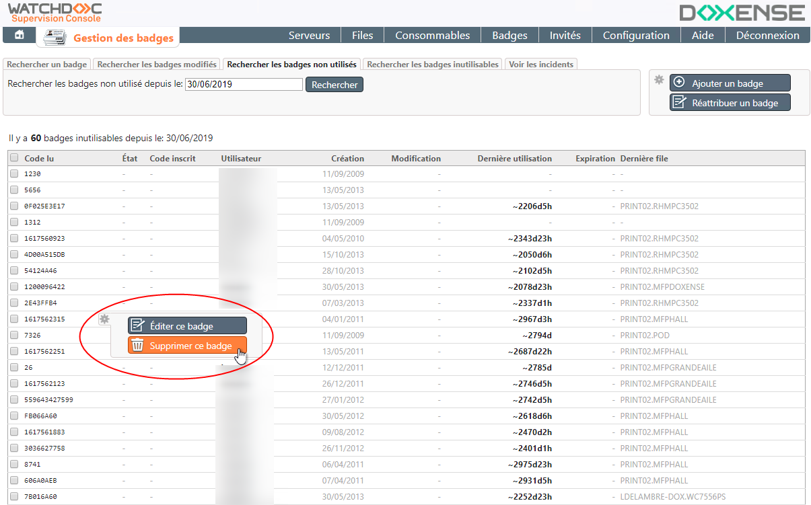
-
puis confirmez la suppression :
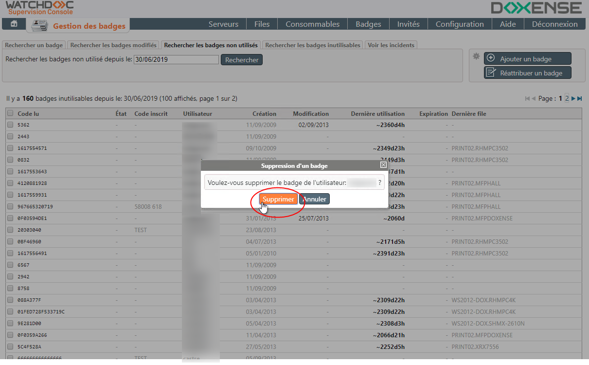
Vous pouvez aussi supprimer plusieurs badges :
-
dans la liste de vos résultats de recherche, cochez les cases correspondant aux badges à supprimer ;
-
ou cochez la case Code lu en haut à gauche de la liste pour sélectionner tous les badges figurant dans la liste affichée dans cette page :
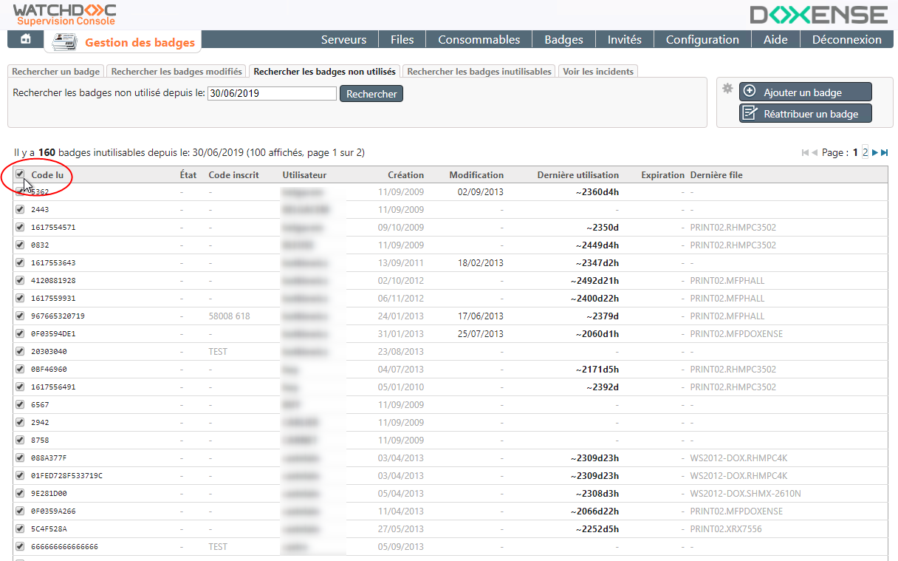
-
une fois les badges sélectionnés, cliquez sur le bouton situé en bas de la liste ;
-
confirmez ensuite la suppression :
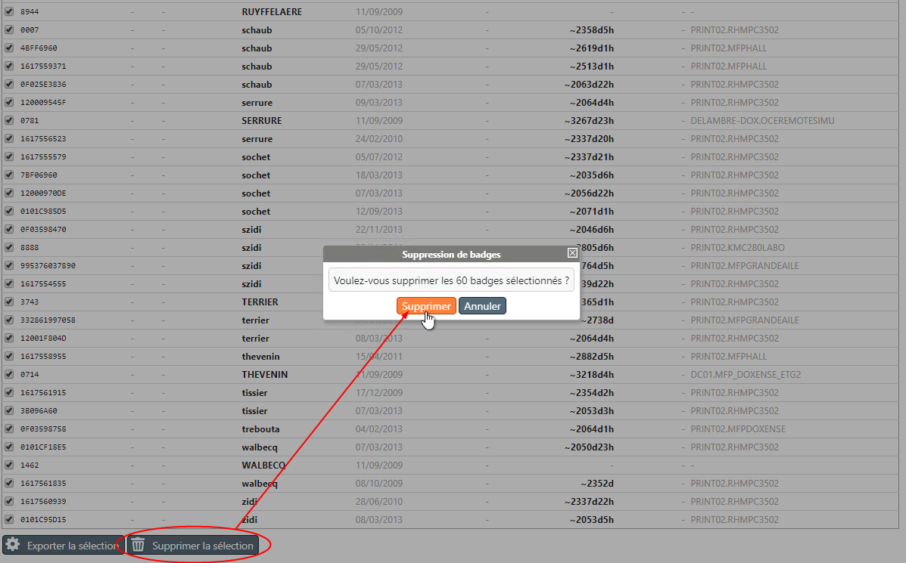